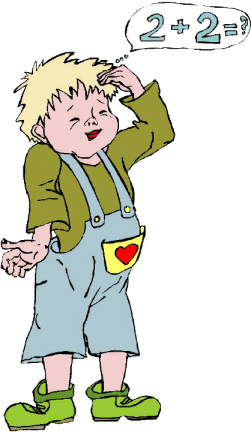

|  | to a Sum |
Two positive numbers are such that their difference is 7 and the difference of their squares is 105. What is their sum?Your task:
- Show your kid brother (or sister) what this means by solving it in an arithmetical manner. Be patient.
- Show your parents how much you've learned in Algebra 1 this year by solving it with basic algebra. This means, just demonstrate what the sum is, without determining what the two numbers are.
| Comments? Send e-mail. | Back to top | Go back to Home Page | Go back to Contents |